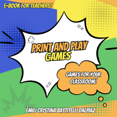
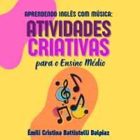
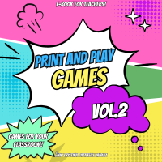

Conheça nossos
Produtos

Jogos para Aulas
de Língua Portuguesa
O eBook Jogos para Aulas de Língua Portuguesa traz propostas criativas que transformam aulas monótonas em momentos divertidos e cheios de aprendizado. Ideal para quem quer envolver os alunos e renovar o ensino da nossa língua! Baixe agora e leve mais dinamismo para a sala de aula!
Compre já!

Print and Play: Games for Teachers
Este eBook foi criado para ajudar teachers a tornarem suas aulas mais leves e dinâmicas. São jogos prontos para imprimir e aplicar é só escolher e usar! Facilite sua rotina e envolva seus alunos com criatividade!
Compre já!O Cérebro a Seu Favor
Pesquisas mostram que estratégias neurocientíficas podem aumentar em até 30% a retenção de informações. Este eBook traz explicações claras e práticas para quem quer aprender melhor, com base na ciência. Ideal para estudantes, educadores e curiosos que buscam resultados reais!
Compre já!Como Ler e Interpretar Textos: um guia prático (GRÁTIS)
Este eBook é ideal para quem deseja desbloquear saberes sobre leitura e interpretação de textos. Com linguagem acessível e direcionada, ele ajuda a desenvolver habilidades essenciais de forma prática. Perfeito para estudantes, educadores e apaixonados por leitura!
Compre já!

Aprendendo inglês com música: atividades criativas para o Ensino Médio
Com o eBook Aprendendo Inglês com Música, você leva atividades criativas e prontas para o Ensino Médio, usando canções marcantes para ensinar vocabulário, gramática e interpretação. Economize tempo e aumente o engajamento dos alunos! Baixe agora e transforme suas aulas em um verdadeiro show!
Compre já!Saúde mental dos professores: um guia neurocientífico para revitalizar a carreira (GRÁTIS)
Este guia, baseado em neurociência, ajuda professores a enfrentarem os desafios da saúde mental na profissão. Com técnicas práticas e embasamento científico, ele oferece ferramentas para restaurar o equilíbrio emocional, prevenir o burnout e fortalecer a relação com o ensino.
Compre já!

Print and Play: Games for Teachers Vol.2
Depois do sucesso do primeiro volume, trazemos mais jogos prontos para imprimir e aplicar. Deixe suas aulas leves, dinâmicas e envolva seus alunos com facilidade! Planeje menos e aproveite mais o tempo com a turma.
Compre já!Imperdível!